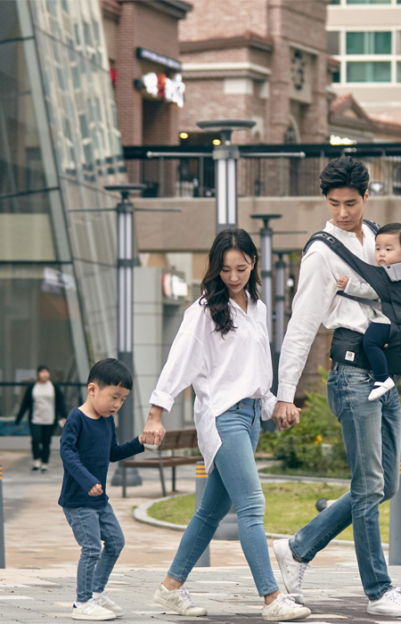

SK건설의 복리후생
- 업무에 몰입할 수 있는
최적의 근무 환경을
제공합니다.
- 개인의 능률을 높이기 위해서 투자를 아끼지 않습니다.
최고 사양의 장비를 활용하여 빠르게 빌드하고,
작업물을 공유할 수 있도록 합니다. 방해 없이
일하고 싶을 때는 노이즈 캔슬링 이어폰을 끼거나,
집중방 또는 근처 카페에서 자유롭게 일할 수 있습니다.
서로의 역량과 Ownership에 대한 깊은 신뢰를 토대로
최대한의 자율성을 보장합니다.
- 열심히 일한 당신 떠나라!
- 업무에 치이고 직장내 관계에 치이는 일들은 어찌보면 당연한 일이 되어버린 직원들에게 과도하게 업무를 강요하지 않습니다. 현장직, 사무직 너나 할것없이 지치셨다면 SK건설의 복지제도를
이용하여 휴가를 다녀오도록하세요. 또한 SK건설은 근무시간 유연선택제를 통해 출퇴근 시간을 선택할 수도 있습니다. 우리는 야근을 지양하지만, 불가피하게 야근을 하셨을 경우엔 보상 휴가를 제공해드립니다. 푹 쉬고, 좋은 컨디션으로 보아요!
- 개인 Needs에 따라 자기개발, 의료비, 휴가여행 지원, 사내 어린이집,사내 도서관 SK그룹 관계사 혜택 T포인트, SK매직, 워커힐, ADT캡스, 구성원몰 등 할인혜택 장기근속 구성원에게 상패, 포상금, 휴가 제공 SK Family Card
- 일상을 든든하게 일상을 걱정없이
- SK건설에서 지원하는 든든한 제도들에 대해 알아보세요. 자녀 학자금 지원에서부터 시작하여 휴대폰 사용료, 경조사 지원 등 일상에서 일어날 수 있는 거의 모든것에대해 걱정없이 지원해드립니다. 마음이 편안하고 걱정이 없어야 하려하는 모든 일들이 긍정적으로 해결되어 간다는 SK건설의 든든지원 제도를 이용해 보세요.
- 자녀 학자금 지원(자녀수 제한X) ,휴대폰 사용료 지원 ,단체 상해보험 가입 불의의 사고, 질병 등으로부터 재정적 보호 제공, 경조사 지원 결혼, 환갑 등 경조사 발생 시 경조금 및 휴가, 화환/조화, 용품 지원 국민연금, 건강보험, 산재보험, 고용보험

- 건강하고 안전한 직장생활
- SK건설은 직원들의 건강을 최우선으로 생각하고있습니다.
건강에 관련된 모든것을 누려보세요.치과 치료비 ,건강관리 센터 등 치료와 검진을 무료로 받고
사내에서 운영하는 GYM에서 전문 트레이터에게 지도받아 건강해지세요. 쾌적한 식당과 친환경 농산물도 지원합니다.
- 부속 치과 운영(가족 가능), 건강관리센터 운영,건강관리 서비스 무료 제공 사내 피트니스 운영, 전문 트레이너의 지도 제공 ,카페테리아식 직원식당 중식 무료 제공, 친환경 농산물 지원, 안전한 친환경 먹을거리 구매 지원
매년 건강검진 지원